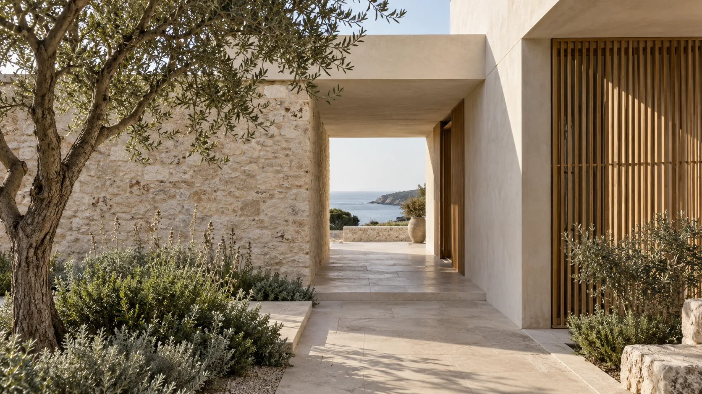
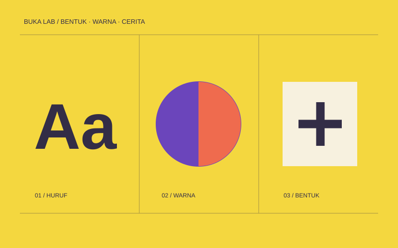
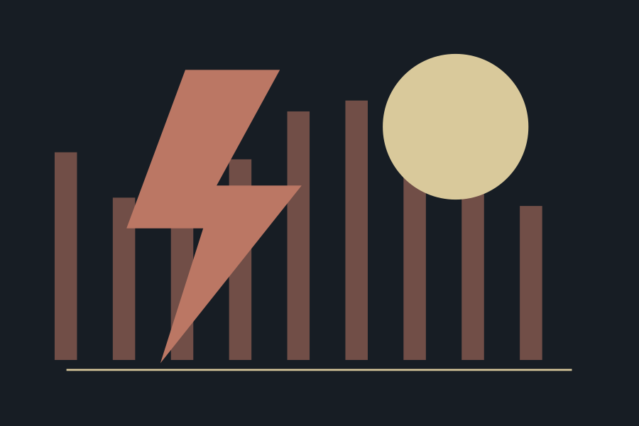
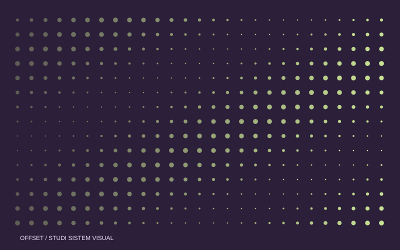
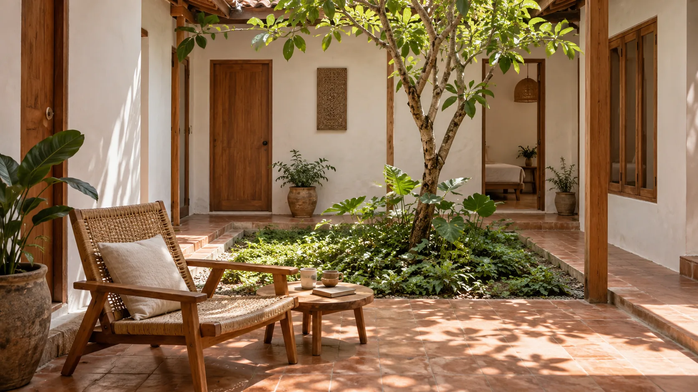
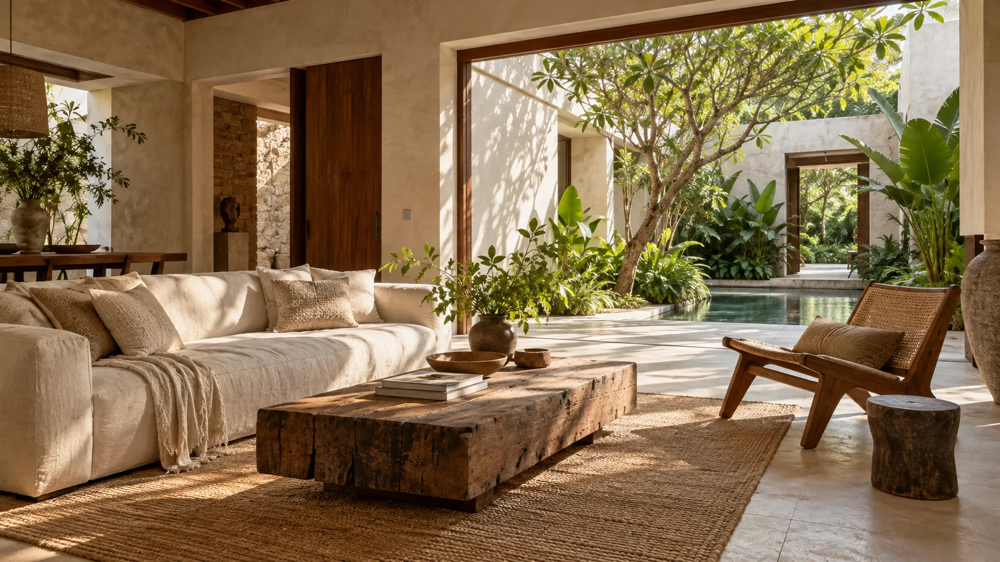
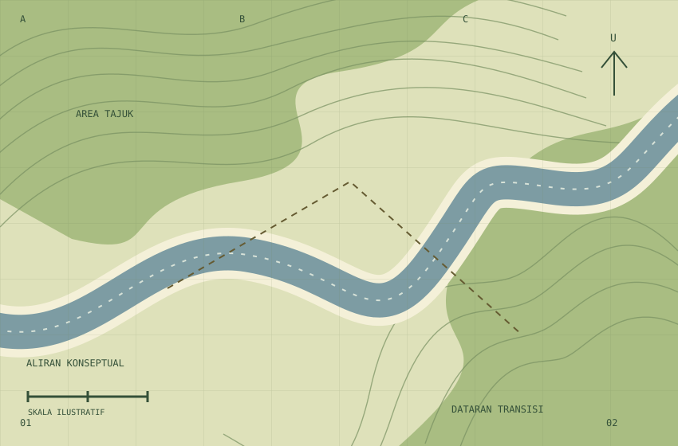

01 / Film & produksi
01 / Film & produksiBudaya & kreatif
AFTERFRAME
Telusuri treatment, komposisi gambar, suara, dan proses penyuntingan melalui satu studi cerita. Pilih topik produksi yang ingin Anda pelajari.
32 halaman · StatisJelajahi demo ↗
THE WEBSITE COLLECTION / VOL. 04
Jelajahi 21 arah desain dari beragam bidang usaha. Bandingkan alur, isi, dan karakter visual untuk menemukan pendekatan yang sesuai dengan kebutuhan Anda.

Dari hospitalitas hingga rekayasa. Pilih bidang, lalu telusuri pengalaman yang paling dekat dengan kebutuhan Anda.
Seluruh demo tetap dapat dibuka dari daftar di bawah.
Coba kata yang lebih umum atau pilih bidang lain.
01 / Film & produksiBudaya & kreatif
Telusuri treatment, komposisi gambar, suara, dan proses penyuntingan melalui satu studi cerita. Pilih topik produksi yang ingin Anda pelajari.
 02 / Antariksa & rekayasa
02 / Antariksa & rekayasaIndustri & sains
Kenali contoh misi, wahana, dan sistem pendukung dalam antarmuka rekayasa antariksa. Status dan angka yang ditampilkan merupakan data konsep.

03 / Arsitektur & interiorRuang & gaya hidup
Jelajahi hubungan cahaya, material, dan kebiasaan sehari-hari. Setiap studi membantu membaca pilihan ruang dengan lebih terarah.
 04 / Manufaktur & rekayasa
04 / Manufaktur & rekayasaIndustri & sains
Pelajari komponen rakitan, metode pemeriksaan, dan dokumentasi melalui studi sambungan mekanis. Temukan lembar yang sesuai pertanyaan teknis Anda.

05 / Pendidikan kreatifLayanan & komunitas
Pilih latihan visual, bentuk, atau cerita. Setiap jalur berisi cara memulai, catatan proses, dan pertanyaan untuk meninjau hasil percobaan.

06 / Festival & acaraBudaya & kreatif
Jelajahi penampil, susun agenda, dan kenali area acara melalui contoh website festival. Temukan informasi praktis sebelum mencoba alur tiket.
07 / Produk & desainRuang & gaya hidup
Kenali speaker konsep One dari bentuk, material, dan perannya di ruang sehari-hari. Coba pilihan produk melalui simulasi lokal.
 08 / Furnitur & kerajinan
08 / Furnitur & kerajinanRuang & gaya hidup
Jelajahi kayu, tekstil, dan sambungan sebelum memilih bentuk objek. Lihat studi furnitur dan susun brief yang dapat diunduh.
 09 / Film & hiburan
09 / Film & hiburanBudaya & kreatif
Jelajahi katalog film fiktif, baca sinopsis, dan susun daftar tontonan lokal. Koleksi dikurasi berdasarkan tema, genre, dan suasana.
 10 / Perjalanan
10 / PerjalananPerjalanan
Coba pencarian rute dan alur pemilihan penerbangan dengan data contoh. Baca panduan bagasi dan perjalanan sebelum menyusun rencana.
 11 / Gim & studio
11 / Gim & studioBudaya & kreatif
Masuki dunia The Cartographers of Nacre melalui cerita, karakter, dan mekanika bermain. Temukan pembaruan serta materi studio dalam satu tempat.
 12 / Jasa profesional
12 / Jasa profesionalBisnis & profesional
Kenali layanan pencatatan, rekonsiliasi, dan pengelolaan arsip. Baca alur dokumen serta contoh lembar kerja sebelum menyiapkan kebutuhan usaha.

13 / Studio desainBisnis & profesional
Jelajahi eksperimen antarmuka, sistem visual, dan pendekatan studio. Mulai dari tujuan pengguna lalu lihat bagaimana gagasan diterjemahkan menjadi pengalaman.
 14 / Olahraga & komunitas
14 / Olahraga & komunitasLayanan & komunitas
Pilih program, kenali rute, dan baca jadwal latihan contoh. Mulai dari tingkat pengalaman Anda dan gunakan panduan untuk menyiapkan sesi.
 15 / Kebun & alam
15 / Kebun & alamLayanan & komunitas
Jelajahi zona tanaman, fase pertumbuhan, dan rute pengamatan. Pilih durasi berjalan serta kegiatan yang paling sesuai dengan minat Anda.
 16 / Editorial & budaya
16 / Editorial & budayaBudaya & kreatif
Baca esai pendek tentang tangan, material, dan kebiasaan. Pilih rute membaca, lalu hubungkan pengamatan kecil dengan cerita yang lebih luas.

17 / HospitalitasRuang & gaya hidup
Kenali kamar, ruang bersama, dan ritme menginap di penginapan konsep. Bandingkan fasilitas sebelum menyusun catatan rencana singgah.

18 / Arsitektur & interiorRuang & gaya hidup
Telusuri studi ruang publik dan hunian, lalu baca pendekatan tapak, iklim, dan material. Setiap catatan menjelaskan pertanyaan di balik keputusan desain.
 19 / Layanan publik
19 / Layanan publikLayanan & komunitas
Pilih layanan, kenali ruang komunitas, dan baca persiapan yang diperlukan. Portal contoh ini menghubungkan kebutuhan harian dengan informasi yang mudah ditemukan.

20 / Riset & lingkunganIndustri & sains
Telusuri stasiun pengamatan, lapisan lanskap, dan metode pencatatan. Pisahkan apa yang diamati dari tafsir agar catatan lapangan mudah dibaca kembali.
 21 / Olahraga & komunitas
21 / Olahraga & komunitasLayanan & komunitas
Lihat jadwal, hasil, dan profil tim dalam contoh website klub sepak bola. Temukan panduan hari pertandingan sebelum mencoba pilihan tiket.